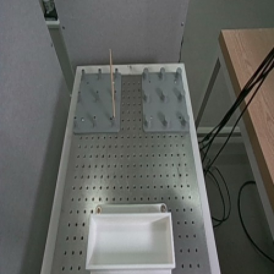
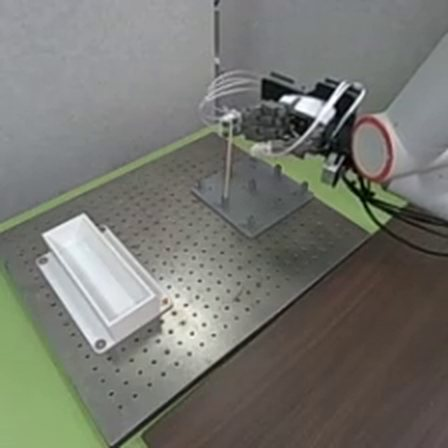
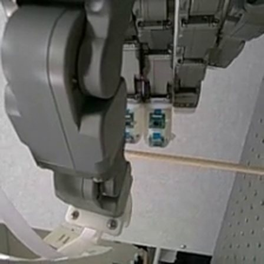

The robot finds the chopstick, then misses the last centimetre
Policy A, the round-4 vision-only policy, found the right socket in 26 of 28 robot trials and placed the chopstick in 18, but its first grasp held in only 12: when it misses, the hand stops moving forward while the fingers close and they shut about 1 cm short, an offset the hand's ToF sensors can see but policy A never reads.
29 September – 6 October 2026
What changed since 28 September
- New ego camera view: diagonal from above across the socket board, and both cameras now give the policy an undistorted square crop, the same in data collection and in every robot test.
- Teleop correction demonstrations (videos below): lateral adjustment (arrive too far from or too close to the palm, slide into place, then close) and regrasp (a deliberate empty first close, then reopen, re-centre and grasp).
- Round-3 dataset: 235 episodes recorded 29 September – 1 October; 198 of them train round 4: 82 clean, 58 lateral adjustment, 58 regrasp.
- Round-4 policies: A (cameras + arm and hand state), B (A with arm-state dropout), C (no state, relative end-effector actions), X (still training). On A's slots on 5 October, B placed 1 of 7 and C 0 of 7 (A: 3 and 4), so A got the full 28 trials.
- VPLA twins training now: A frozen as the planner, plus a proximity expert that reads the palm and fingertip ToF sensors. E_real sees the ToF; E_blind is identical with the ToF blanked.



Details of these changes
- Camera: still the RealSense D455, re-aimed 22–24 Sep and turned a further 3° on 29 Sep. Both cameras now send a square centre crop resized to 224×224 (for the ego camera, 240×240 out of its 424×240 frame); earlier datasets squashed the full frame. A sub-pixel image shift seen on 2 Oct (about 5 mm of apparent chopstick position) is checked during the evaluations.
- Correction demos: 58 lateral adjustment and 58 regrasp kept, 8 of each per trained socket (4 per direction) and 10 at P2. Offset sizes were judged by eye (about one or two finger widths).
- Round-3 data: 235 episodes recorded; 198 train round 4 after a quality audit and trimming. Round 4 uses the corrections only from the start of their recovery (the slide-in, or the reopen), so the approach itself is learned from the 82 clean demonstrations. Split frozen 1 Oct.
- Why that trim (2 Oct): a round-3 policy trained on every episode failed its first robot test (0 of 8 at P1 and P2): away from the clean path it copied the corrections' deliberate errors, such as the intentional empty close of the regrasp demos.
- Round 4: 55,110 steps each (10 epochs). A: absolute joint targets; final checkpoint 55109 (4 Oct). B: arm state dropped with p 0.5 in training; final 55000. C: finished 5 Oct; its hand sinks during the close. X = C's actions with A's state, due about 8 Oct.
- VPLA twins: the expert reads the palm sensor up to 300 mm and the fingertips up to 150 mm; both twins train 15,000 steps on round 3 with the same data, batches and seed, finishing around 17:00 on 6 Oct.
- Evaluation: PLACED-148 placement measure (3 Oct; 77 of 81 clean demos pass); an arm safety envelope that holds the arm if a command lands more than 12° (now 16°) from every demonstrated pose (5 Oct); first-attempt grasp made the pre-registered primary measure, with a required "first close: secured / weak / empty / none" key (6 Oct).
- Hardware: the hand froze on 1 Oct (a loose Ethernet cable and a driver with no read timeout); both fixed. A teleop bug that dropped the smoothing after the first episode of a session was fixed before round 3.
5–6 October 2026
28 robot trials of policy A
| Policy A, 28 trials | R1A 5 Oct | R2A 5 Oct | R3A 6 Oct | R4A 6 Oct | All 28 |
|---|---|---|---|---|---|
| Placed in the container (operator key 4) | 4 | 3 | 5 | 6 | 18 |
| Went to the right socket | 7 | 6 (1 unclear) | 7 | 6 (1 wrong) | 26 |
| First grasp held (FAG) | 4* | 2* | 3 | 3 | 12 (13 lenient) |
| Hand on target when the first close starts (PLACED-148) | 3 | 3 of 6 | 2 | 5 | 13 of 27 |
| Trials with regrasps (regrasps in total) | 3 (7) | 4 (14) | 3 (5) | 4 (19) | 14 (45) |
| Contact that bent or struck the chopstick (stopped early) | 1 (1) | 3 (3) | 1 (0) | 1 (1) | 6 (5) |
| Safety holds | 0 | 0 | 0 | 0 | 0 |
Swipe the table sideways for R3A, R4A and the totals.
Checkpoint 55109; 7 trained sockets × 4 chopstick corners, one trial each; outcomes keyed by the operator (0 collision / no approach, 1 approach failed, 2 grasp failed, 3 placement failed, 4 placed). FAG = the first close lifted the chopstick out of the socket: pre-registered for 6 October (R3A, R4A); *for 5 October it was defined after the trials. PLACED-148 = hand within 14 mm across and 12.5 mm along the reach of the demonstrators' grasp point at the start of the first close (R2A P7 FR never closed).
- Localisation is good: the right socket in 26 of 28; no safety holds.
- The grasp is the weak step: the first close held in 12 of 28 (6 of 14 each day). Most other placements needed regrasp searches: 45 regrasps in 14 trials.
- Contact: in 6 trials the hand or thumb bent or struck the chopstick; the operator stopped 5 of them early.
A clean first grasp
successful p4 trial
A long regrasp search
the policy was always positioning the hand laterally too close to the chopstick and it did this multiple times
Contact: the thumb bends the chopstick
thumb finger made contact with the chopstick and the manipulator keep moving, bending the chopstick so i stopped the trial early
Offline analysis of the 28 trials, 6 October
How it fails: the hand stops advancing while the fingers close
- A clean first grasp looks like a demonstration: a median 37 s of policy time, against 124 s when the chopstick is secured only after regrasps.
- The miss happens in the last centimetre. Closes that held keep the hand moving forward while the fingers close and shut where the demonstrator's do (−11.1 vs −11.6 mm). Closes that missed advance only 3–8 mm and shut about 10 mm short. Where the close starts does not separate them: 7 of 21 held and 25 of 47 failed closes started on target (PLACED-148).
- Retries do not converge: 16 of 68 closes were abandoned halfway (demos: 0 of 81); the next attempt started farther from the grasp point in 23 of 41 retries; the open hand parked 24–30 mm away for up to 25 s (demos: at most 4 s); the thumb bends followed overshoots of 27–86 mm.
Teleop demonstrations 81 closes · median −11.6 mm · moved 11.2 mm forward while closing
Policy A: closes that held the chopstick 21 closes · median −11.1 mm · moved 9.6 mm forward while closing
Policy A: full closes that missed 31 closes · median −0.4 mm · moved 5.9 mm forward while closing
Reach-axis position of the hand when the fingers finished closing (mm). 0 = where the demonstrator typically starts closing at that socket and corner.
Every close of the 28 trials (one mark each), against the 81 clean teleop demonstrations of round 3. Grey band: where 95% of the demonstrators' closes finished. Not shown: A's 16 abandoned (partial) closes. Positions are the commanded hand pose relative to the demonstrators' typical close-start point at the same socket and corner; the measured pose differs by a median 1 mm. The chopstick's true position is not measured, and contact can move it.
Recorded during R3A and R4A (14 trials); policy A never reads it
What the hand's ToF sensors saw
- The palm sensor sees where the chopstick is along the reach. The chopstick shows as a band whose row follows the hand's offset (Spearman −0.84 over 37 closes; about 1.2 rows per 10 mm, as in the teleop demos), and it tracks the chopstick from attempt to attempt, overshoot included (−0.97 over the 9 attempts of R4A P8 BL).
- But a single snapshot does not predict success: at the moment A starts to close, held and missed closes look alike (band row 6.8 vs 7.2). After the close the palm cannot see whether the chopstick is in the hand; the fingertip sensors partly can, and the measured finger positions almost can (10 of 12 vs 1 of 10), but A only gets the commanded hand state.
the chopstick, nearer = stronger (up to 150 mm) the hand's own fingers (always in view)
Left: the palm sensor at the start of three attempts in trial R4A P8 BL (16×16 zones; blank = nothing within 150 mm). Right: band row against the hand's commanded reach-axis offset at all 37 close starts of R3A and R4A (14 trials); the 9 attempts of R4A P8 BL are joined in order. Proximity was off for policy A: these are passive recordings. The band rule (self-view mask, ≥ 5 zones per row) was chosen after looking at the grids, without the outcome labels. Correlations are descriptive at this n.
6–7 October 2026
Next: does the VPLA use the ToF?
- Tonight (6 October), offline Gate 1, pre-registered: is the ToF used, does it help, and is it the palm sensor that helps?
- Wednesday 7 October, only if Gate 1 passes: E_real against E_blind on the robot, blinded and interleaved, on the same 28 socket–corner slots, with A's 28 trials as the reference. Primary measure (pre-registered): first-attempt grasp.
- A positive result would let the paper claim a higher first-attempt grasp; and, reported but not pre-registered, fewer closes, less time to a secure grasp, retries that move toward the chopstick and fewer overshoot contacts. Nothing about the VPLA on the robot is known yet.
Gate 1 in plain words, and the limits of Wednesday's test
- Used: do the twin's predicted actions change (by at least 1 mm at the grasp point, or 1 mm of finger opening) when its ToF input is zeroed or shuffled? Helps: on held-out recordings, is E_real's action error lower than E_blind's, and lower than with shuffled ToF? Palm: does most of that gain come from the palm sensor? Each rule has a pre-registered threshold and 95% interval.
- A win of E_real over E_blind shows that the ToF helps this expert. It shows that the VPLA beats the vision-only policy only if E_real also beats A.
- With 28 trials per arm only a large effect is detectable: against A's 12 of 28 first-attempt grasps, a true rate of 80% would be detected about 3 times in 4, and 60% only about 1 time in 6.
Teleop demonstrations: how the corrections were taught
Round-3 training data recorded by a human operator with the glove. These are not policy runs. Videos are being recorded; each slot fills in automatically once its file is uploaded.
Lateral adjustment: too far
Lateral adjustment: too close
Regrasp: too far
Regrasp: too deep
All 28 trials of policy A, as videos (4× speed)
Every clip is an autonomous run of policy A with no human control; the operator only starts the trial, scores it and may stop it. Videos load only when played.